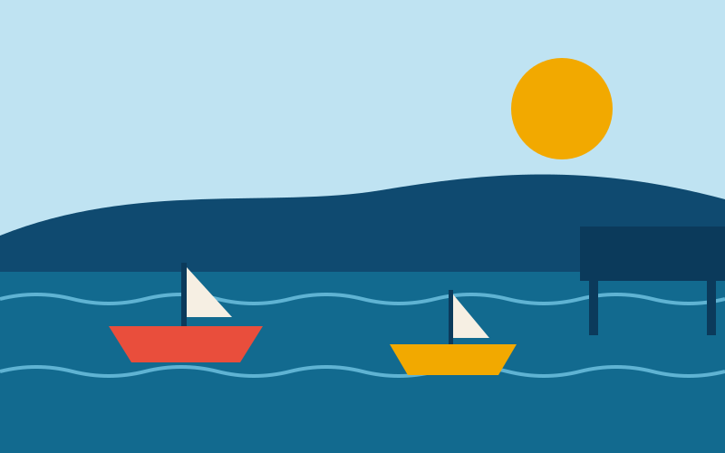

Pescadores y vecinos del puerto plantean sus prioridades para el borde costero
En un encuentro abierto en la caleta, dirigentes de la pesca artesanal y vecinos del sector conversaron sobre limpieza, seguridad y espacios para el comercio local. Las propuestas recogidas se sumarán al programa participativo.
Enviar una propuesta